1. Tekenen met Turtle#
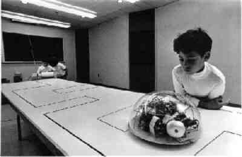
Halverwege de vorige eeuw ontwikkelden de makers van de programmeertaal LOGO een robotschildpad waarmee ze kinderen wilden leren programmeren. Door de schildpad instructies te geven, bewoog deze zich over een vel papier. Aan de schildpad was een viltstift gemonteerd. Op die manier kon je de robot een tekening laten maken.
Met de turtle module kunnen we in Python hetzelfde doen.
Wat leer je in dit hoofdstuk
Hoe importeer je de
turtlemodule in je programma.Hoe maak je een turtle aan.
Hoe laat je de turtle bewegen.
Hoe verander je het uiterlijk van de turtle.
Hoe haal je de pen van het tekenpapier en hoe zet je hem weer neer.
Hoe wijzig je de dikte en de kleur van de pen.
Hoe vul je een getekende figuur op met een kleur.
Hoe laat je de turtle een cirkel tekenen.
1.1. Turtle variabelen#
Start in Mu editor met een nieuw bestand door op de knop New te klikken. Typ onderstaande code in het bestand en let daarbij goed op het verschil tussen hoofdletters en kleine letters! Sla het bestand op als hello_turtle.py.
Run deze code om het resultaat te bekijken.
Sommige functies zoals print() zitten standaard in Python, maar om met de schildpad te kunnen werken is het nodig de module turtle te importeren. Dat gebeurt op regel 1. Op regel 3 maken we met de functie turtle.Turtle() een schildpad aan met de naam tony. Op regel 5 sturen we tony 100 pixels naar voren.
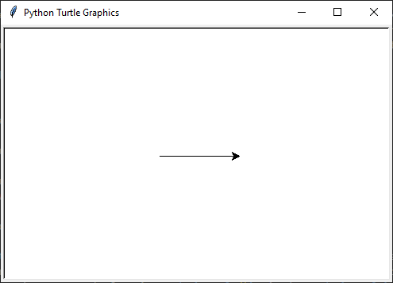
Maar wat is dat nu? Onze Tony lijkt helemaal niet op een schildpad! Hij lijkt meer op een pijlpunt! Daar gaan we verandering in brengen. En we gaan hem ook van richting laten veranderen. Pas je code als volgt aan (de nieuwe regels zijn gemarkeerd):
Op regel 4 zorgt tony.shape('turtle') ervoor dat onze schildpad er ook uitziet als een schildpad. De regels 7, 9 en 11 laten tony linksaf slaan alvorens verder te lopen.
Meer weten over turtle shapes?
Om de vorm van tony in een schildpad te veranderen, gaven we de functie tony.shape() de waarde 'turtle' mee. Er zijn echter nog andere vormen mogelijk. Dit is de volledige lijst:
'arrow''turtle''circle''square''triangle''classic'
De waarde die je tussen de haakjes aan de functie tony.forward() meegeeft, is het aantal pixels dat de schildpad vooruit moet bewegen. Maar wat doet het getal 90 tussen de haakjes van tony.left()?
Vraag
Wat betekent het getal 90 tussen de haakjes van turtle.left()?
Antwoord
Dat getal geeft aan hoeveel graden de turtle moet draaien. Een hoek van 90° is een rechte hoek. De aanroep turtle.left(90) zorgt er dus voor dat de turtle 90° naar links draait, oftewel linksaf slaat.
In onderstaande figuur zie je hoe een cirkel in graden is verdeeld. Hoeveel graden zitten er in een volledige cirkel denk je?
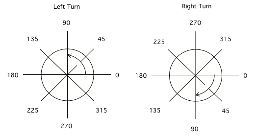
Regel 3 in onze code bevat het assignment statement tony = turtle.Turtle. Je weet dat met een assignment statement een variabele wordt gemaakt. Dat betekent dat tony een variabele is. Maar wat is het datatype van deze variabele? Het is geen integer, float of string, maar wat is het wel? De functie type() biedt uitkomst:
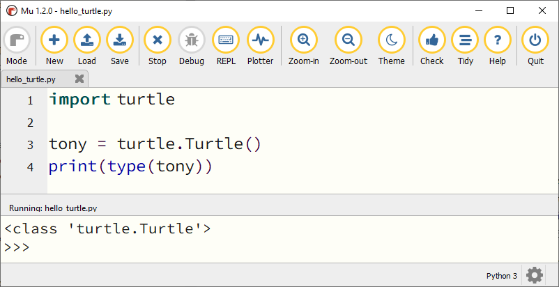
Blijkbaar heeft de variabele tony het datatype turtle.Turtle. Een variabele hoeft dus niet altijd een getal of tekst te bevatten maar kan ook een object bevatten zoals in dit geval een virtuele schildpad.
Niets belet ons om meer dan één turtle variabele te maken. Probeer het volgende maar eens:
In dit voorbeeld zijn tony en tina twee turtle variabelen, waarvan de eerste eruitziet als een cirkel en de tweede als een vierkant. Met tony.shapesize(2) en tina.shapesize(2) maken we hun vormen iets groter, zodat je ze beter kunt zien.
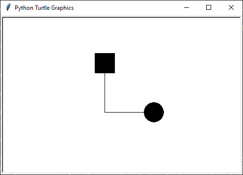
1.2. De basisbewegingen#
Tot nu toe hebben we in onze code voor de beweging van de schilpad de functies forward() en left() gebruikt. Kun je voorspellen welke bewegingsfuncties er nog meer zijn? Juist, backward() en right(). Omdat je deze vier functies heel vaak gebruikt, zijn er afkortingen voor, zodat je minder hoeft te typen.
Functie |
Afkorting |
|---|---|
|
|
|
|
|
|
|
|
Let op: in je eigen code vervang je bij het aanroepen van een turtle functie het woord turtle door de naam van jouw schildpad, dus bijvoorbeeld tony.rt() in plaats van turtle.rt() .
Opdracht 01
Vervang de code in hello_turtle.py door onderstaande code. Je hoeft de code niet over te typen, je kunt kopiëren en plakken.
1import turtle
2
3tony = turtle.Turtle()
4tony.shape('turtle')
5
6tony.lt(90)
7tony.fd(100)
8tony.bk(50)
9tony.rt(90)
10tony.fd(60)
Run de code om te zien dat de schildpad het begin van een hoofdletter H tekent. Maak de code af zodat een volledige hoofdletter H wordt getekend.
1.3. Pen up, pen down en pen size#
Zoals je hebt gemerkt, is tony een schildpad die van tekenen houdt, want hij heeft een pen vast waarmee hij zijn afgelegde weg tekent. Soms wil je echter dat tony zijn pen even van het ‘papier’ haalt. Met de volgende twee functies kun je de pen van de schildpad bedienen:
Functie |
Afkorting |
|---|---|
|
|
|
|
Daarnaast kun je de pendikte instellen met de volgende functie:
Functie |
|---|
|
Bij de functies turtle.penup() en turtle.pendown() zet je niks tussen de haakjes, maar de functie turtle.pensize() heeft wél input nodig. Tussen de haakjes zet je een geheel getal dat de pendikte in pixels aangeeft. Dus bijvoorbeeld turtle.pensize(10)
Opdracht 02
Breid je code in hello_turtle.py uit zodat naast de letter H ook een hoofdletter E wordt getekend, met pendikte 5.
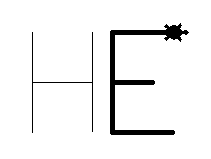
Kies zelf mooie lengtes voor de drie horizontale lijnen van de letter E, zodat je resultaat lijkt op het bovenstaande plaatje.
Hint
Na de code die de letter H tekent, moet je dus eerst tony.penup() aanroepen om de pen van het papier te halen. Vervolgens beweeg je de schildpad 20 pixels vooruit met tony.fd(20) (misschien moet je hem eerst nog draaien, zodat hij de goede kant op gaat). Daarna roep je tony.pendown() aan om de pen weer op het papier te zetten. Als je dat voor elkaar hebt, kun je de code maken die de letter E tekent.
1.4. Kleuren#
Onze schildpad tekent vooralsnog zwarte lijnen; tijd voor wat fleurigheid! Uiteraard is er een functie om de penkleur van tony te veranderen.
Functie |
|---|
|
Tussen de haakjes geef je de gewenste kleur mee met de Engelse naam tussen aanhalingstekens, bijvoorbeeld turtle.pencolor('yellow') of turtle.pencolor('green'). Andere kleuren zijn gold, orange, red, maroon, violet, magenta, purple, navy, blue, skyblue, cyan, turquoise, lightgreen, darkgreen, chocolate, brown, black en gray. En er zijn er nog veel meer! Op deze website kun je een kleurenpalet vinden.
Opdracht 03
Breid je code in hello_turtle.py uit zodat de schildpad het woord HELLO tekent, waarbij elke letter een andere kleur en een andere pendikte heeft. Je mag zelf je favoriete kleuren en pendiktes kiezen. Hieronder staat een voorbeeldje.
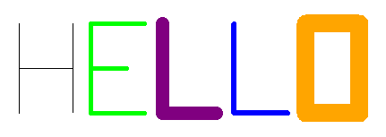
1.5. Draaiingshoeken#
Draaien met een hoek van 90° is niet zo moeilijk. Draaiingshoeken met een andere grootte zijn lastiger dan je misschien denkt. Probeer de onderstaande opdracht maar eens.
Opdracht 04
Begin met een nieuw codebestand (via de New knop). Importeer de turtle module en maak een turtle aan. In de vorige opdrachten heette de turtle tony, maar je mag nu ook zelf een naam verzinnen. Sla het bestand op onder de naam turtle_house.py.
Maak een algoritme dat de onderstaande figuur tekent zónder de pen van het papier te halen, zónder de turtle.bk() functie te gebruiken en zónder een draai van 180° te maken.
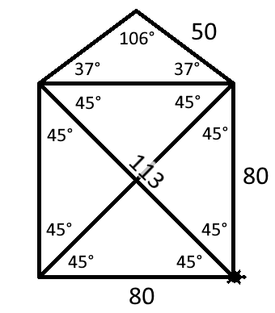
Hint 1
Teken de figuur eerst eens zelf op papier zonder je pen op te tillen. Kun je erachter komen in welk punt je het beste kunt beginnen?
Hint 2
Begin in de hoek linksonder en teken eerst het vierkant van 80 bij 80 pixels. Maak dan de diagonaal, het dak en tenslotte de diagonaal naar rechtsonder.
Hint 3
De hoeken in de figuur zijn niet altijd de hoeken die je moet invullen bij turtle.lt() of turtle.rt(). Kijk maar eens naar de onderstaande afbeelding. De turtle komt van boven naar beneden aangelopen en moet vervolgens de diagonaal van linksonder naar rechtsboven maken. Om dat te doen moet hij niet 45° draaien, maar 90° + 45° = 135°. Ook bij het tekenen van het dak moet je goed nadenken over de te draaien hoeken.
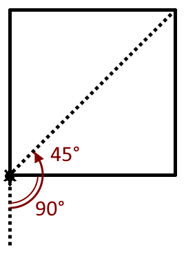
1.6. Figuurvulling#
Het is mogelijk om een door de turtle getekende figuur op te vullen met een kleur. Daarvoor gebruik je de volgende functies:
Functie |
Werking |
|---|---|
|
Op dezelfde manier als |
|
Roep deze functie aan juist voordat de te vullen vorm wordt getekend. |
|
Roep deze functie aan meteen nadat de te vullen vorm is getekend. |
Je kunt dit uitproberen met het onderstaande codevoorbeeld. Maak hiervoor weer een nieuw bestand aan, met de naam turtle_fill.py.
1import turtle
2
3tony = turtle.Turtle()
4tony.shape('turtle')
5tony.pensize(5)
6
7# Stel de penkleur en de vulkleur in
8tony.pencolor('black')
9tony.fillcolor('yellow')
10
11# Teken een driehoek met vulling
12tony.begin_fill()
13tony.fd(100)
14tony.lt(120)
15tony.fd(100)
16tony.lt(120)
17tony.fd(100)
18tony.lt(120)
19tony.end_fill()
Opdracht 05
Breid de code in turtle_fill.py uit, zodat links van het driehoekje een regelmatige vijfhoek met rode vulling wordt getekend, zoals in onderstaande figuur. De zijden van de vijfhoek zijn 60 pixels lang.
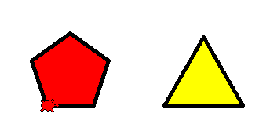
Hint
Om te berekenen hoeveel graden de turtle telkens moet draaien, kun je bedenken dat gedurende het tekenen van de vijfhoek de turtle in totaal precies één hele draai maakt van 360°. Deze draai wordt gelijk verdeeld over de vijf hoeken.
Vorm |
Aantal hoeken |
Turtle draaihoek |
Totale draaiing |
|---|---|---|---|
Driehoek |
3 |
120° |
3 * 120° = 360° |
Vierhoek |
4 |
90° |
4 * 90° = 360° |
Vijfhoek |
5 |
?° |
5 * ?° = 360° |
1.7. Cirkels#
Veelhoeken zijn leuke figuren, en we zullen er later nog vaker op terugkomen, maar soms wil je gewoon een cirkel tekenen. Met Python turtle kan dat op twee manieren; met turtle.dot() en met turtle.circle().
Functie |
Werking |
|---|---|
|
Tekent een ronde stip met een diameter die je aangeeft met |
|
Tekent een cirkel met een straal (dat is de afstand tussen het middelpunt van de cirkel en de rand, dus eigenlijk de halve diameter) die je aangeeft met |
Probeer beide functies uit met onderstaande code. Gebruik een nieuw bestand, met de naam turtle_circles.py
1import turtle
2
3tony = turtle.Turtle()
4
5tony.circle(40)
6tony.dot(80)
Zie je het verschil tussen de beide functies? turtle.dot() levert een gevulde cirkel (een stip) en turtle.circle() een niet-gevulde cirkel. Je kunt met turtle.begin_fill() en turtle.end_fill() de niet-gevulde cirkel natuurlijk alsnog vullen, zoals in onderstaand voorbeeld. Om het verschil tussen rand en vulling goed zichtbaar te maken worden in dit voorbeeld ook de pendikte en de kleuren ingesteld.
1import turtle
2
3tony = turtle.Turtle()
4tony.pensize(5)
5tony.pencolor("black")
6tony.fillcolor("green")
7
8tony.begin_fill()
9tony.circle(40)
10tony.end_fill()
11tony.dot(80)
Meer weten over extra mogelijkheden met turtle.circle()?
Behalve de straal van de cirkel, kun je aan turtle.circle() nóg een getal meegeven. Probeer de volgende code maar eens:
1import turtle
2
3tony = turtle.Turtle()
4
5tony.circle(40, 90)
Run het programma en wijzig daarna regel 5 in tony.circle(40, 180). Run weer en wijzig daarna regel 5 in tony.circle(40, 270). Zie je wat dat tweede getal doet?
Je kunt zelfs nog een derde getal toevoegen binnen de haakjes. Probeer het volgende:
1import turtle
2
3tony = turtle.Turtle()
4
5tony.circle(40, 360, 4)
Run het programma en wijzig daarna regel 5 in tony.circle(40, 360, 5). Run weer en wijzig daarna regel 5 in tony.circle(40, 360, 6). Zie je wat het derde getal doet?
Opdracht 06
Vervang de code in turtle_circles.py door een programma dat een stoplicht tekent zoals hieronder getoond. De afmetingen mag je zelf kiezen en hoeven niet exact overeen te komen met het voorbeeld.
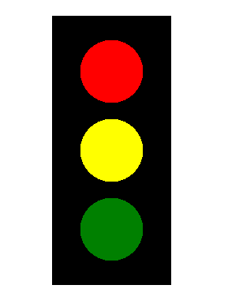
1.8. Overzicht turtle functies#
Hier nog eens een overzicht van alle turtle functies die je tot nu toe bent tegengekomen en nog een paar meer. Een veel uitgebreider overzicht vind je in de (Engelstalige) Python documentatie.
Functie |
Werking |
|---|---|
|
Maakt een nieuwe turtle variabele. Let op de hoofdletter T in |
|
Stelt de vorm van de turtle in. Mogelijke waarden voor |
|
Stelt de grootte van de turtle in. Met de parameters |
|
Stelt de snelheid van de turtle in. Voor de parameter |
|
Maakt de turtle onzichtbaar. |
|
Maakt de turtle zichtbaar. |
Functie |
Werking |
|---|---|
|
Verplaatst de turtle vooruit met de gegeven afstand. |
|
Verplaatst de turtle achteruit met de gegeven afstand. |
|
Draait de turtle linksom over de gegeven hoek. |
|
Draait de turtle rechtsom over de gegeven hoek. |
Meestal gebruiken we de afgekorte versies van deze functies turtle.fd(distance), turtle.bk(distance), turtle.lt(angle) en turtle.rt(angle).
Functie |
Werking |
|---|---|
|
Haalt de pen van het papier. |
|
Plaatst de pen op het papier. |
|
Stelt de dikte van de pen in. |
|
Stelt de kleur van de pen in. |
|
Stelt de kleur waarmee een figuur wordt opgevuld in. |
|
Aan te roepen juist voor het tekenen van de figuur die moet worden opgevuld. |
|
Aan te roepen juist na het tekenen van de figuur die moet worden opgevuld. |
Functie |
Werking |
|---|---|
|
Tekent een cirkel met de gegeven radius. Als je een waarde voor |
|
Tekent een stip met de gegeven diameter en kleur. Je mag de kleur weglaten; dan wordt de huidige penkleur gebruikt. |
|
Stempelt een afdruk van de turtlevorm op het papier. |
1.9. Oefeningen#
Opdracht 07 - Windows logo
Schrijf een programma dat een eenvoudige versie van het Windows logo tekent:
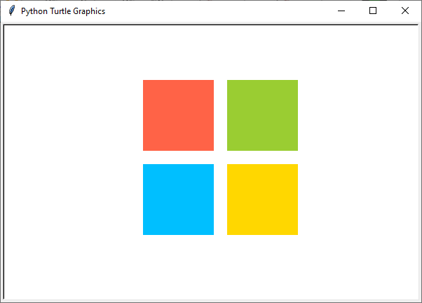
Het logo bestaat uit vier vierkantjes met zijden van 100 pixels. De ruimte tussen de vierkantjes is 20 pixels. De in het voorbeeld gebruikte kleuren heten:
'tomato''yellow green''deep sky blue''gold'
Hint 1
De vierkantjes hebben geen zichtbare rand. Dat kun je voor elkaar krijgen door de penkleur en de vulkleur voor elk vierkant dezelfde waarde te geven:
tony.pencolor('tomato')
tony.fillcolor('tomato')
Het is ook mogelijk dit met één regel code te bewerkstelligen:
tony.color('tomato', 'tomato')
Met de functie turtle.color() kun je in één keer de penkleur én de vulkleur instellen.
Hint 2
Het is handig om je code netjes te structureren in een aantal blokken:
Tekenen van het rode vierkant.
De turtle verplaatsen.
Tekenen van het groene vierkant.
De turtle verplaatsen.
Tekenen van het gele vierkant.
De turtle verplaatsen.
Tekenen van het blauwe vierkant.
Door dat te doen, kun je veel code copy-pasten. Het tekenen van een vierkant is namelijk elke keer hetzelfde.
Opdracht 08 - Zandloper
Schrijf een programma dat een zandloper tekent:
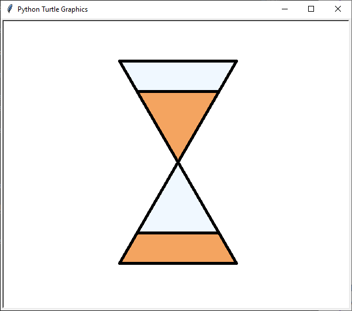
De zandloper bestaat uit twee gelijkzijdige driehoeken met zijden van 200 pixels. Voor het zand is in het voorbeeld de kleur 'sandy brown' gebruikt en voor het glas de kleur 'alice blue'. De pendikte in het voorbeeld is 5 pixels.
Hint
Bij deze opdracht zou je verschillende driehoeken over elkaar kunnen tekenen. Voor de bovenste helft bijvoorbeeld eerst een driehoek met een lichtblauwe vulling en daaroverheen een driehoek met een zandkleurige vulling.
Opdracht 09 - Olympische ringen
Schrijf een programma dat de Olympische ringen tekent:
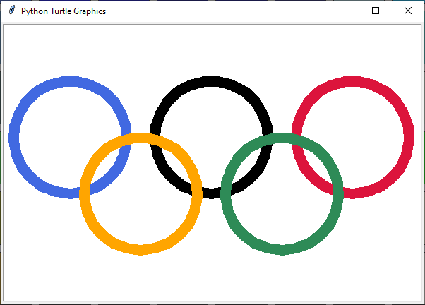
In het voorbeeld hebben de ringen een straal van 80 pixels (dus een diameter van 160 pixels) en is de pendikte 15 pixels. De gebruikte kleuren zijn:
'royal blue''black''crimson''sea green''orange'
Opmerking
De echte Olympische ringen zien er iets anders uit. Kijk maar eens hoe de ringen voor en achter elkaar zijn geplaatst:
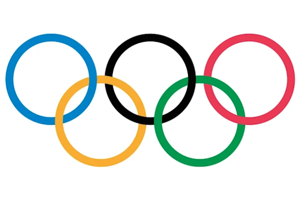
Je zou dit met de turtle wel voor elkaar kunnen krijgen, maar dat is niet eenvoudig!
Opdracht 10 - Sheriff ster
Schrijf een programma dat de ster van een Sheriff tekent:
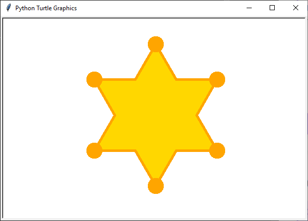
In het voorbeeld is de pendikte 5 pixels, de penkleur 'orange' en de vulkleur 'gold'. De lijnstukjes zijn 80 pixels lang en de rondjes hebben een diameter van 32 pixels.
Hint 1
Bedenk op welke manier je de rondjes gaat tekenen. Gebruik je daar de turtle.circle() functie voor of liever turtle.dot()?
Hint 2
De punten van de ster kun je beschouwen als gelijkzijdige driehoeken rondom een regelmatige zeshoek. Kun je daaruit afleiden wat de draaiingshoeken zijn? Je moet de turtle afwisselend linksom en rechtsom laten draaien.
1.10. Oplossingen#
Oplossing opdracht 07
1import turtle
2
3tony = turtle.Turtle()
4
5# Teken rood vierkant
6tony.color('tomato', 'tomato')
7tony.begin_fill()
8tony.fd(100)
9tony.lt(90)
10tony.fd(100)
11tony.lt(90)
12tony.fd(100)
13tony.lt(90)
14tony.fd(100)
15tony.lt(90)
16tony.end_fill()
17
18# Verplaats 120 pixels naar rechts
19tony.pu()
20tony.fd(120)
21tony.pd()
22
23# Teken groen vierkant
24tony.color('yellow green', 'yellow green')
25tony.begin_fill()
26tony.fd(100)
27tony.lt(90)
28tony.fd(100)
29tony.lt(90)
30tony.fd(100)
31tony.lt(90)
32tony.fd(100)
33tony.lt(90)
34tony.end_fill()
35
36# Verplaats 120 pixels naar beneden
37tony.pu()
38tony.rt(90)
39tony.fd(120)
40tony.lt(90)
41tony.pd()
42
43# Teken geel vierkant
44tony.color('gold', 'gold')
45tony.begin_fill()
46tony.fd(100)
47tony.lt(90)
48tony.fd(100)
49tony.lt(90)
50tony.fd(100)
51tony.lt(90)
52tony.fd(100)
53tony.lt(90)
54tony.end_fill()
55
56# Verplaats 120 pixels naar links
57tony.pu()
58tony.bk(120)
59tony.pd()
60
61# Teken blauw vierkant
62tony.color('deep sky blue', 'deep sky blue')
63tony.begin_fill()
64tony.fd(100)
65tony.lt(90)
66tony.fd(100)
67tony.lt(90)
68tony.fd(100)
69tony.lt(90)
70tony.fd(100)
71tony.lt(90)
72tony.end_fill()
Oplossing opdracht 08
1import turtle
2
3tony = turtle.Turtle()
4tony.pensize(5)
5
6# Teken bovenste driehoek
7tony.fillcolor('alice blue')
8tony.begin_fill()
9tony.fd(200)
10tony.rt(120)
11tony.fd(200)
12tony.rt(120)
13tony.fd(200)
14tony.end_fill()
15
16# Teken zandvulling in bovenste driehoek
17tony.fillcolor('sandy brown')
18tony.bk(200)
19tony.begin_fill()
20tony.fd(140)
21tony.rt(120)
22tony.fd(140)
23tony.rt(120)
24tony.fd(140)
25tony.end_fill()
26
27# Teken onderste driehoek
28tony.fillcolor('alice blue')
29tony.begin_fill()
30tony.fd(200)
31tony.lt(120)
32tony.fd(200)
33tony.lt(120)
34tony.fd(200)
35tony.end_fill()
36
37# Teken zandvulling in onderste driehoek
38tony.fillcolor('sandy brown')
39tony.bk(200)
40tony.begin_fill()
41tony.fd(60)
42tony.lt(60)
43tony.fd(140)
44tony.lt(60)
45tony.fd(60)
46tony.lt(120)
47tony.fd(200)
48tony.end_fill()
Oplossing opdracht 09
1import turtle
2
3tony = turtle.Turtle()
4tony.pensize(15)
5
6# Teken blauwe ring
7tony.pencolor('royal blue')
8tony.circle(80)
9
10# Verplaats 200 pixels naar rechts
11tony.pu()
12tony.fd(200)
13tony.pd()
14
15# Teken zwarte ring
16tony.pencolor('black')
17tony.circle(80)
18
19# Verplaats 200 pixels naar rechts
20tony.pu()
21tony.fd(200)
22tony.pd()
23
24# Teken rode ring
25tony.pencolor('crimson')
26tony.circle(80)
27
28# Verplaats 80 pixels naar beneden en 100 pixels naar links
29tony.pu()
30tony.rt(90)
31tony.fd(80)
32tony.lt(90)
33tony.bk(100)
34tony.pd()
35
36# Teken groene ring
37tony.pencolor('sea green')
38tony.circle(80)
39
40# Verplaats 200 pixels naar links
41tony.pu()
42tony.bk(200)
43tony.pd()
44
45# Teken gele ring
46tony.pencolor('orange')
47tony.circle(80)
Oplossing opdracht 10
1import turtle
2
3tony = turtle.Turtle()
4tony.pensize(5)
5
6tony.color('orange', 'gold')
7tony.begin_fill()
8
9tony.fd(80)
10tony.dot(32)
11tony.lt(120)
12tony.fd(80)
13tony.rt(60)
14
15tony.fd(80)
16tony.dot(32)
17tony.lt(120)
18tony.fd(80)
19tony.rt(60)
20
21tony.fd(80)
22tony.dot(32)
23tony.lt(120)
24tony.fd(80)
25tony.rt(60)
26
27tony.fd(80)
28tony.dot(32)
29tony.lt(120)
30tony.fd(80)
31tony.rt(60)
32
33tony.fd(80)
34tony.dot(32)
35tony.lt(120)
36tony.fd(80)
37tony.rt(60)
38
39tony.fd(80)
40tony.dot(32)
41tony.lt(120)
42tony.fd(80)
43tony.rt(60)
44
45tony.end_fill()
Extra - Tekst tonen
Als je de tekst ‘Sheriff’ op de ster wilt tonen, kun je de volgende code toevoegen:
47# Tekst
48tony.pu()
49tony.bk(40)
50tony.lt(90)
51tony.fd(40)
52tony.rt(90)
53tony.pencolor('dark goldenrod')
54tony.write('SHERIFF', False, align = 'center', font = ('Arial Narrow', 32, 'bold'))
Extra - Cirkels in plaats van stippen
Wanneer je in plaats van turtle.dot() de functie turtle.circle() gebruikt, kun je de volgende ster tekenen:
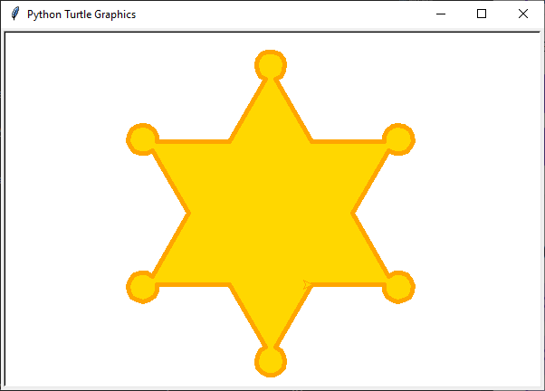
In dit voorbeeld is er met de aanroep tony.circle(16, 320) voor gezorgd, dat de turtle 320° van een hele cirkel (360°) met straal 16 tekent. Echter direct vóór en ná deze aanroep moet de turtle 100° rechtsom draaien.
Oplossing
1import turtle
2
3tony = turtle.Turtle()
4tony.pensize(5)
5
6tony.color('orange', 'gold')
7tony.begin_fill()
8
9tony.fd(80)
10tony.rt(100)
11tony.circle(16,320)
12tony.rt(100)
13tony.fd(80)
14tony.rt(60)
15
16tony.fd(80)
17tony.rt(100)
18tony.circle(16,320)
19tony.rt(100)
20tony.fd(80)
21tony.rt(60)
22
23tony.fd(80)
24tony.rt(100)
25tony.circle(16,320)
26tony.rt(100)
27tony.fd(80)
28tony.rt(60)
29
30tony.fd(80)
31tony.rt(100)
32tony.circle(16,320)
33tony.rt(100)
34tony.fd(80)
35tony.rt(60)
36
37tony.fd(80)
38tony.rt(100)
39tony.circle(16,320)
40tony.rt(100)
41tony.fd(80)
42tony.rt(60)
43
44tony.fd(80)
45tony.rt(100)
46tony.circle(16,320)
47tony.rt(100)
48tony.fd(80)
49tony.rt(60)
50
51tony.end_fill()